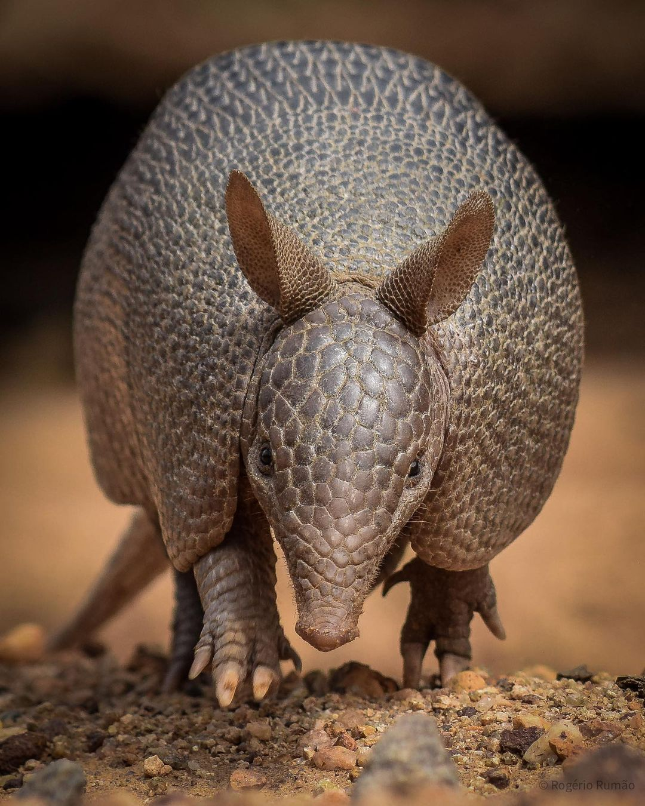
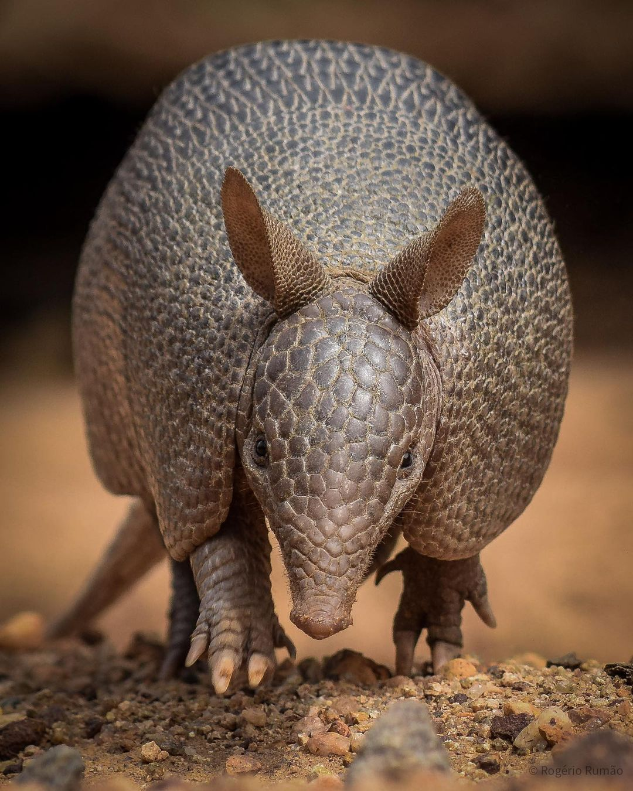
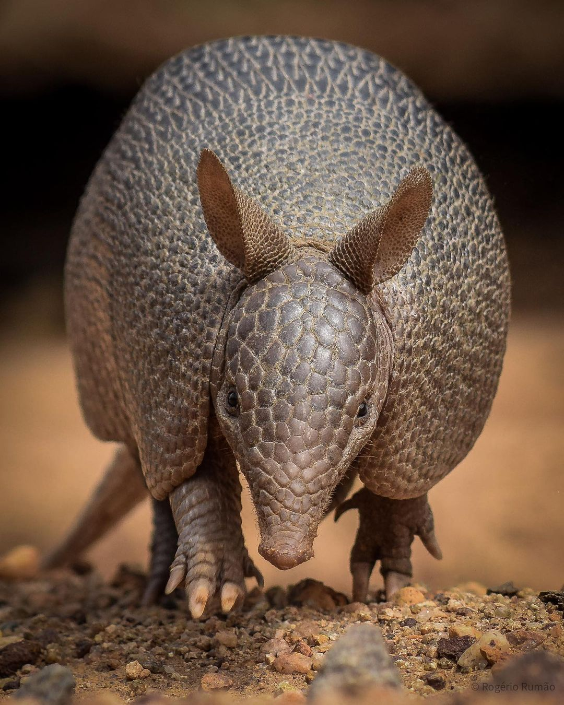

Resgatar, proteger e reabilitar animais expulsos de seus habitats naturais, garantindo acolhimento digno,
tratamento especializado e a chance de retornar à natureza.

Objetivos
Queremos construir um futuro em que animais silvestres não sejam vítimas da perda de seus
lares naturais.
Oferecer abrigo temporário e cuidados veterinários a animais em situação de risco.
Promover programas de reintegração à natureza ou realocação segura em reservas ambientais.
Desenvolver ações de educação ambiental junto à sociedade.
Estimular parcerias para fortalecer a preservação dos ecossistemas.
Valores
Porque salvar um animal é também salvar a floresta.


 
